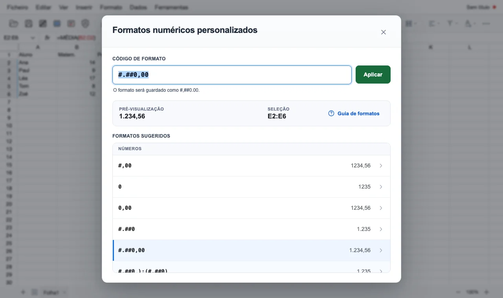

Formatos de número
Um formato muda a apresentação de um número, não o seu valor: os cálculos conservam todas as casas decimais.
Escolher um formato
Formato › Número, ou a lista Automático da barra de botões.
| Formato | Exemplo |
|---|---|
| Automático | 1200,09 |
| Texto simples | 1200,09, alinhado à esquerda; a entrada fica um texto |
| Número | 1200,09 |
| Percentual | 120009,00%; 0,25 passa a 25,00% |
| Científico | 1,20E+03 |
| Contabilidade | R$(1.200,09) |
| Moeda | R$1.200,09 |
| Data, Hora, Data e hora | para as datas: 29/11/2017, 3:00 PM, 15:00… |
O símbolo monetário é o do idioma da interface.
| Botão | Efeito |
|---|---|
| percentagem | |
| menos uma casa decimal | |
| mais uma casa decimal |
Estes botões valem também para os números de uma lista. Para arredondar o próprio valor, usar ARRED.
Formato personalizado
Formato › Número › Formato numérico personalizado…: escolher um formato sugerido, ou escrever um código. A pré-visualização mostra o resultado; Guia de formatos lembra os sinais; Aplicar dá-o à seleção.

| Sinal | Função | Código | 1234,5 mostra-se |
|---|---|---|---|
0 | um algarismo, incluindo zero | 0,00 | 1234,50 |
# | um algarismo se for útil | #,## | 1234,5 |
. | agrupa os milhares | #.##0 | 1.235 |
% | percentagem | 0% | 123450% |
"texto" | um texto, uma unidade | 0,0 "m" | 1234,5 m |
E+00 | notação científica | 0,00E+00 | 1,23E+03 |
; | formatos de positivos, negativos, zeros, textos | 0;-0;"nulo" | 1235 |
[Red] | cor | 0;[Red]-0 | negativos a vermelho |
O código escreve-se com os separadores do idioma; a janela indica a forma em que é guardado (#,##0.00), a mesma do Excel.
Datas e horas
| Código | 29 de agosto de 2026, 14:30 |
|---|---|
dd/MM/yyyy | 29/08/2026 |
d mmm yyyy | 29 Aug 2026 |
dddd d mmmm yyyy | Saturday 29 August 2026 |
hh:mm | 14:30 |
dd/MM/yyyy hh:mm | 29/08/2026 14:30 |
Os nomes dos meses e dos dias mostram-se em inglês.
Unidades
Em Unidades, formatos como 0,00 "V", 0,00 "Ω", 0,00 "mm": a célula continua a ser um número, com o qual se calcula.